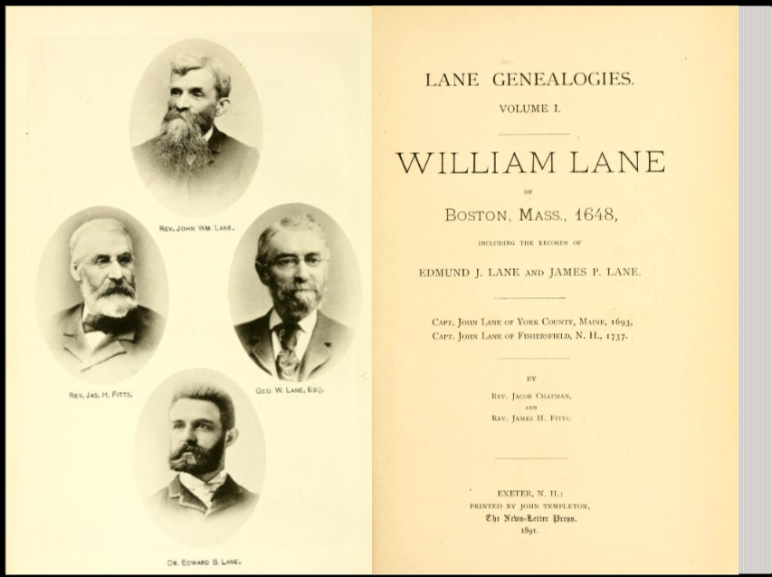

Lane Genealogies · Vol. I · 1891
Four centuries in code and voice

Evidence · Exeter, N.H. · PDF p. 4 · plate p4-i0
Part I · Family No. 1
No. 1 · WILLIAM LANE¹
(3) III. Samuel² carried the name toward Hadley and Hampton.
Evidence · PDF p. 19 · Context · Freeman 1657
Part I · Family No. 3
No. 3 · Samuel² (Wm.¹)
Hadley frontier household — and the seventeen oh four captivity narrative in Volume One.
Evidence · PDF p. 22 · Context · Connecticut River frontier
Hampton & Chester · 1709–1784
Cornet of horse · Sept. 1754
Chester farmer, tavern-keeper, militia man — sons carried the name to Bennington.
Evidence · Lane Genealogies · Context · French & Indian War era
Scientific Lane
George G. Lane in Popular Science, May 1884 — then Jonathan Homer Lane, Lane–Emden, and lunar crater Lane.
Evidence · Patent Office & Coast Survey · Context · IAU crater 1970
1891 register → Postgres
No. 3 · (5) I. Samuel³ · PDF p. 22
Live · /api/genealogy/relationships · /api/genealogy/genealogy-codes
Lane Family Cinema
thelanefamily.us · /family/lane-cinema.html · /family/genealogy.html